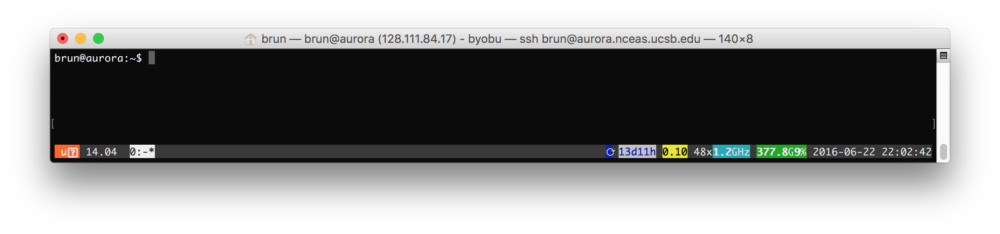

brun@taylor:/courses/EDS214$ ls -l
total 16
drwxrwxr-x+ 3 brun esmdomainusers 4096 Aug 20 04:49 data
drwxrwxr-x+ 2 katherine esmdomainusers 4096 Aug 18 18:32 example Using the Command line Interface
Short introduction to the command line interface (CLI)
The CLI provides a direct way to interact with the Operating System, by typing in commands.
Why the CLI is worth learning
- Might be the only interface you have to a High Performance Computer (HPC)
- Command statements can be reused easily and saved as scripts
- Easier automation and text files manipulation
A little bit of terminology
Command Line Interface (CLI): This is a user interface that lets you interact with a computer. It is a legacy from the early days of computers. Now a days computers have graphical user interfaces instead (MacOSX, Windows, Linux, …)Terminal: It is a an application that lets you run a command line interface. It used to be a physical machine connected to a mainframe computerShell: It is the program that runs the command line. There are many different shells, the most common (an default on most system) beingbash(Bourne Again SHell)
Tip
Not convinced? Check this out: the CLI pitch
The Terminal from RStudio
You can access the command line directly from RStudio by using the Terminal tab next to your R console.
Permissions
All files have permissions and ownership.

- List files showing ownership and permissions:
ls -l
You can change those permissions:
- Change permissions:
chmod - Change ownership:
chown
Tip
Clear contents in terminal window: clear
General command syntax
command [options] [arguments]
where command must be an executable file on your PATH * echo $PATH
and options can usually take two forms * short form: -a * long form: --all
You can combine the options:
ls -ltrhWhat do these options do?
man ls
Tip
hit spacebar to get to the next page of the manual hit q to exit the help
Connecting to a remote server via ssh
From the gitbash (MS Windows) or the terminal (Mac) type:
ssh taylor.bren.ucsb.eduYou will be prompted for your username and password.

You can also directly add your username:
ssh brun@taylor.bren.ucsb.eduIn this case, you will be only asked for your password as you already specified which user you want to connect with.
Unix systems are multi-user
- Who else is logged into this machine?
who - Who is logged into “this shell”?
whoami
Getting help
<command> -h,<command> --helpman,info,apropos,whereis- Search the web!
finding stuff
Show me my Rmarkdown files!
find . -iname '*.Rmd'Which files are larger than 1GB?
find . -size +1GWith more details about the files:
find . -size +1G -lsGetting things done
Some useful, special commands using the Control key
- Cancel (abort) a command:
Ctrl-cNote: very different than Windows!! - Stop (suspend) a command:
Ctrl-z Ctrl-zcan be used to suspend, then background a process
Process management
- Like Windows Task Manager, OSX Activity Monitor
top,ps,jobs(hitqto get out!)killto delete an unwanted job or process- Foreground and background:
&
What about “space”
- How much storage is available on this system?
df -h - How much storage am “I” using overall?
du -hs <folder> - How much storage am “I” using, by sub directory?
du -h <folder>
History
- See your command history:
history - Re-run last command:
!!(pronounced “bang-bang”) - Re-run 32th command:
!32 - Re-run 5th from last command:
!-5 - Re-run last command that started with ‘c’:
!c
A sampling of simple commands for dealing with files
wccount lines, words, and/or charactersdiffcompare two files for differencessortsort lines in a fileuniqreport or filter out repeated lines in a file
Get into the flow, with pipes
stdin, stdout, stderr$ ls *.png | wc -l
$ ls *.png | wc -l > pngcount.txt
$ diff <(sort file1.txt) <(sort file2.txt)
$ ls foo 2>/dev/null- note use of
*as character wildcard for zero or more matches (same in Mac and Windows) ?matches single character;_is SQL query equivalent
Text editing
Some editors
vimemacsnano
$ nano .bashrcHands-on
Let’s practice our new skills! Click here
Aknowledgements
This section adapted materials from NCEAS Open Science for Synthesis (OSS) intensive summer schools and other training. Contributions to this content have been made by Mark Schildhauer, Matt Jones, Jim Regetz and many others; and from EDS-213 10 bash essentials developed by Greg Janée